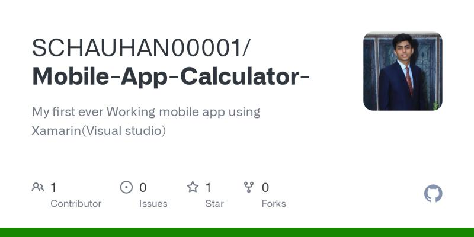
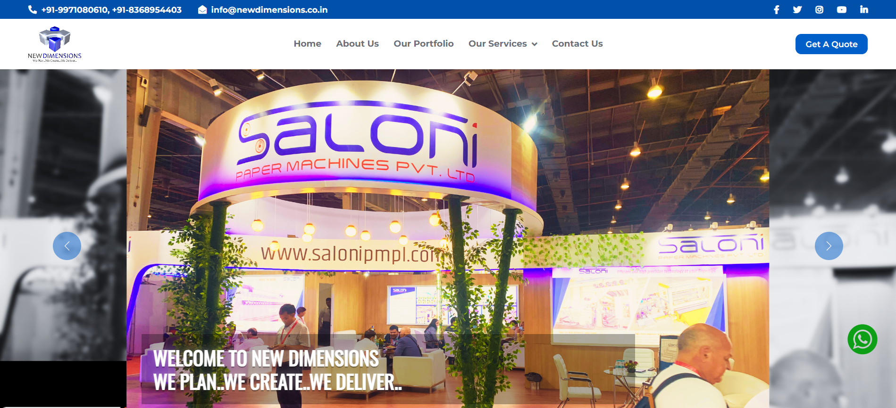
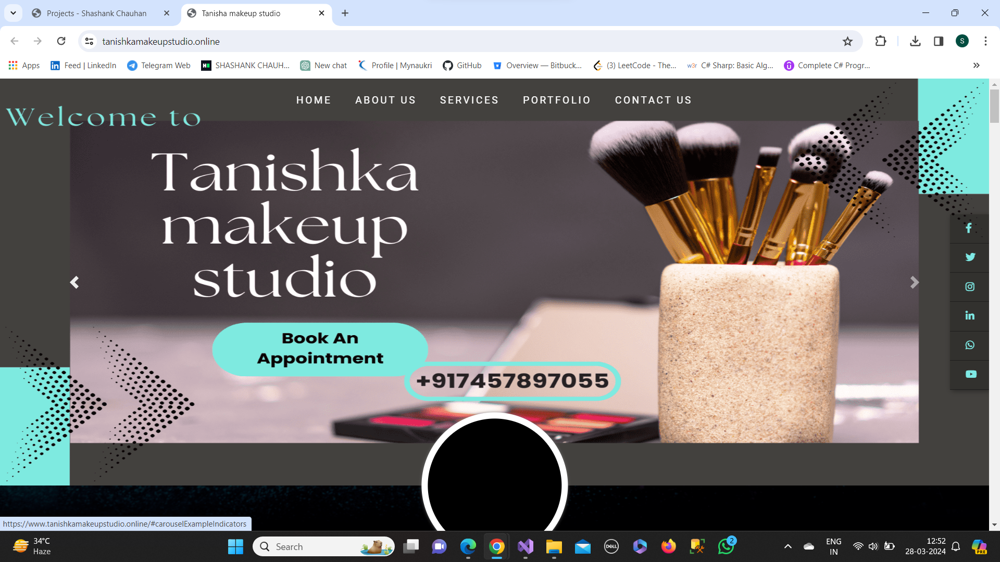

E-Library Management
The E-Library Management System represents a significant advancement in library operations, aimed at transforming traditional library services and elevating the overall user experience. Developed as a comprehensive solution, it seamlessly integrates cutting-edge technologies to streamline library processes and empower users with efficient access to resources.
Key Features:
- Efficient Resource Management: The system offers robust tools for cataloging and organizing digital resources, including books, journals, articles, and multimedia materials. Through intuitive interfaces, librarians can easily add, edit, and manage resources, ensuring comprehensive coverage and accurate information retrieval.
- User-Friendly Interface: With a user-centric design, the E-Library Management System prioritizes ease of use and accessibility. Patrons can effortlessly search for desired materials, explore curated collections, and navigate through the library catalog with minimal effort, enhancing their overall browsing experience.
- Personalized Recommendations: Leveraging advanced algorithms, the system provides personalized recommendations based on user preferences, borrowing history, and browsing patterns. By offering tailored suggestions, it encourages exploration and discovery, fostering a deeper engagement with the library's offerings.
Technologies Used:
- ASP.NET: The project harnesses the power of ASP.NET framework for building dynamic and responsive web applications. Through its robust features and scalability, it ensures a seamless and secure online experience for library patrons.
- C#: As the primary programming language, C# facilitates the development of efficient backend logic and business processes. Its versatility and performance optimization capabilities contribute to the system's reliability and performance.
- JavaScript: JavaScript is employed to enhance the interactivity and responsiveness of the user interface, enabling dynamic content updates, form validation, and asynchronous interactions.
- SCSS (Sass): SCSS is utilized for stylesheet authoring, allowing for modular and maintainable CSS code. With its features like variables, mixins, and nested rules, it promotes code reusability and simplifies styling management.
Conclusion: The E-Library Management System represents a significant leap forward in modernizing library services, offering a comprehensive platform for digital resource management and user engagement. By leveraging innovative technologies and user-centric design principles, it sets a new standard for libraries in the digital age, empowering both librarians and patrons alike.

Cross-Platform Mobile Application
The Cross-Platform Mobile Application project marks my entry into mobile app development using Xamarin C#. This project aimed to create a versatile mobile application that could run seamlessly on multiple platforms, providing a consistent user experience across various devices.
Key Features:
- Platform Compatibility: The application was designed to work smoothly on both Android and iOS devices, eliminating the need for separate development efforts for each platform.
- Native-Like Performance: Leveraging Xamarin's capabilities, the app delivered native-like performance and user experience, ensuring optimal speed and responsiveness.
- Reusable Codebase: With Xamarin's cross-platform development approach, a significant portion of the codebase could be shared across platforms, reducing development time and effort.
Technologies Used:
- Xamarin: Xamarin served as the primary framework for building the cross-platform mobile application, enabling code sharing and native API access.
- Visual Studio: Visual Studio provided a comprehensive development environment for Xamarin projects, offering robust tools for coding, debugging, and testing.
- C#: C# served as the programming language for developing the application logic, offering a familiar and powerful language for cross-platform development.
- XAML: XAML (eXtensible Application Markup Language) was used for designing the user interface of the application, facilitating the creation of visually appealing and responsive UI components.
Conclusion: The Cross-Platform Mobile Application project was a significant milestone in my journey as a mobile app developer. By leveraging Xamarin and related technologies, I gained valuable experience in building high-quality, cross-platform mobile applications that offer a seamless user experience across diverse devices.
Predictive Machine Learning Application
In my recent project, I took on the role of lead developer in the creation of a predictive machine learning application. This application aimed to utilize machine learning algorithms to analyze data and make predictions or decisions based on that analysis.
Key Features:
- Data Analysis and Prediction: The application was designed to process large datasets, identify patterns, and generate predictive models using machine learning algorithms. This allowed users to make informed decisions based on data-driven insights.
- Scalability and Performance: Leveraging .NET Core, the application was built to handle large volumes of data efficiently and scale according to user requirements. This ensured optimal performance even when dealing with complex datasets.
- Integration with Visual Studio: Visual Studio provided a robust development environment for building and debugging the application. Its comprehensive set of tools and features facilitated seamless development and testing of machine learning models.
Technologies Used:
- ML.NET: ML.NET served as the primary framework for implementing machine learning functionality within the application. Its rich set of libraries and algorithms enabled the development of predictive models for various use cases.
- C#: C# was the language of choice for developing the application logic and integrating ML.NET functionalities. Its object-oriented nature and versatility made it well-suited for implementing complex algorithms and data processing tasks.
- .NET Core: .NET Core provided the runtime environment for deploying the application, offering cross-platform compatibility and high performance. Its support for modern development practices ensured seamless integration with other technologies.
Conclusion: The Predictive Machine Learning Application project represented a significant step forward in leveraging machine learning technologies to solve real-world problems. By harnessing the power of ML.NET, C#, and .NET Core, I was able to lead the development of an application that provided valuable insights and predictions to users, ultimately contributing to informed decision-making and improved outcomes.
New Dimensions
As a backend developer at New Dimensions, my primary responsibility revolves around optimizing the company's online presence and operations. Leveraging my expertise in .NET, SQL, and C#, I actively contribute to the development and maintenance of web applications, ensuring they meet the highest standards of performance, security, and reliability.
Key Responsibilities:
- Backend Development: I play a key role in designing, implementing, and maintaining the backend logic of web applications, utilizing .NET, SQL, and C# to ensure optimal functionality and performance.
- Database Management: With a focus on data integrity and efficiency, I oversee database management tasks, including schema design, query optimization, and performance tuning, using SQL Server.
- Code Optimization: I continuously strive to optimize codebase performance and maintainability through refactoring, code reviews, and the adoption of best practices and design patterns.
- Collaboration and Communication: I actively collaborate with cross-functional teams, including frontend developers, designers, and project managers, to deliver high-quality solutions that meet project requirements and deadlines.
Technologies Used:
- .NET: .NET framework provides the foundation for backend development, offering a comprehensive set of tools and libraries for building robust and scalable web applications.
- SQL: SQL serves as the backbone for data management and storage, enabling efficient querying, manipulation, and retrieval of data from relational databases.
- C#: C# is the primary programming language used for backend development, offering a rich set of features, strong typing, and seamless integration with .NET framework.
Conclusion: At New Dimensions, I am committed to leveraging my expertise in .NET, SQL, and C# to drive innovation and excellence in backend development. By optimizing the company's online presence and operations, I contribute to its success and growth in today's competitive digital landscape.
Sunflower Wooden Handicrafts
As a backend developer at Sunflower Wooden Handicrafts, I am responsible for optimizing the company's online presence to provide a seamless and user-friendly experience for customers. By leveraging my expertise in .NET, SQL, and C#, I contribute to the development and maintenance of web applications, ensuring they meet the highest standards of performance, security, and usability.
Key Responsibilities:
- Backend Development: I play a crucial role in designing, implementing, and maintaining the backend logic of web applications, using .NET, SQL, and C# to ensure optimal functionality and performance.
- User Experience Optimization: With a focus on enhancing user experience, I collaborate with frontend developers and designers to implement intuitive interfaces, smooth navigation, and efficient workflows.
- Data Management: I oversee database management tasks, including schema design, query optimization, and data migration, to ensure data integrity, efficiency, and scalability using SQL Server.
- Code Optimization: I continuously optimize codebase performance and maintainability through refactoring, code reviews, and the adoption of best practices and design patterns.
Technologies Used:
- .NET: .NET framework provides the foundation for backend development, offering a comprehensive set of tools and libraries for building robust and scalable web applications.
- SQL: SQL serves as the backbone for data management and storage, enabling efficient querying, manipulation, and retrieval of data from relational databases.
- C#: C# is the primary programming language used for backend development, offering a rich set of features, strong typing, and seamless integration with .NET framework.
Conclusion: At Sunflower Wooden Handicrafts, I am dedicated to leveraging my expertise in .NET, SQL, and C# to enhance the company's online presence and deliver exceptional user experiences. By optimizing web applications and implementing innovative solutions, I contribute to the company's success and growth in the digital marketplace.
Tanisha Makeup Studio
At Tanisha Makeup Studio, as a backend developer, I am responsible for enhancing the studio's online presence and functionality.
Key Responsibilities:
- Developing and maintaining backend systems to support the studio's online platform.
- Implementing features to improve user experience, such as appointment scheduling and client management.
- Ensuring data security and integrity through robust database management practices.
- Collaborating with frontend developers and designers to integrate backend functionality seamlessly.
- Monitoring system performance and troubleshooting issues to ensure uninterrupted service.
Technologies Used:
- .NET: .NET provides a powerful framework for developing a wide range of applications, including web applications for managing appointments, client information, or online booking systems for the studio.
- SQL: SQL is essential for managing the studio's data, ensuring that information is stored securely and efficiently. It allows for seamless management and retrieval of information, from client profiles to inventory details.
- C#: C# serves as the programming language that ties everything together. With its versatility and performance, C# enables the creation of dynamic and scalable backend systems tailored to the needs of Tanisha Makeup Studio.
About Tanisha Makeup Studio:
Tanisha Makeup Studio is a hub for beauty enthusiasts, providing top-notch makeup services for various occasions and events. With a focus on creativity and client satisfaction, the studio offers personalized makeup solutions to enhance individual beauty.
